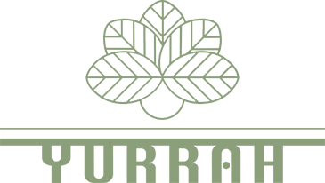
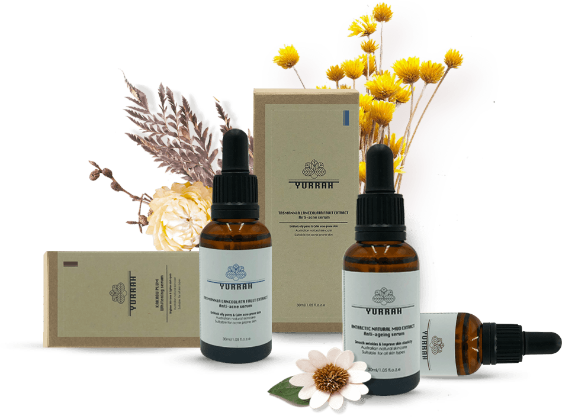
自然呵护 四季无休
明星产品
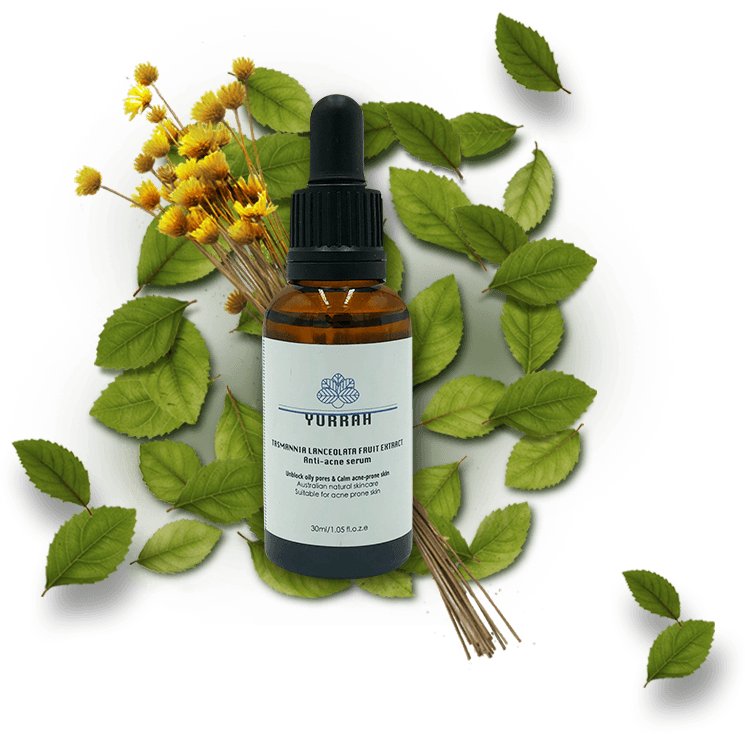
诞·生
Yurrah是澳洲原住民的语言，它的意思是天然绿色植物，它代表了我们产品的理念：健康、安全、有效！
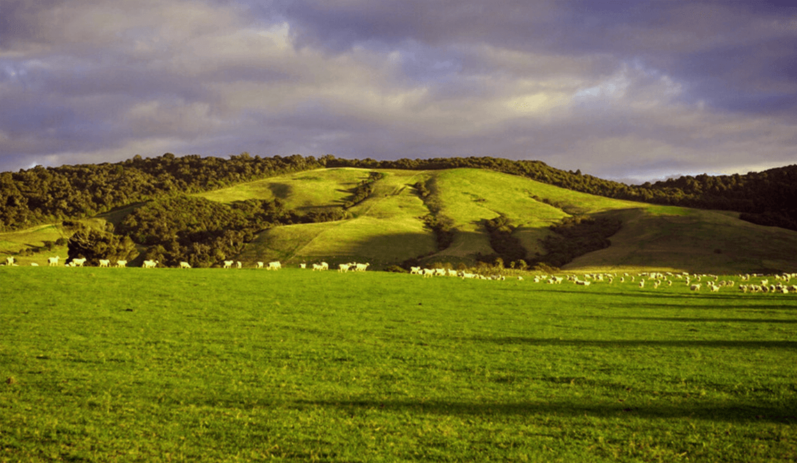
自·然
澳洲大陆拥有着大自然赐予的珍稀植物，它馈赠了非常珍贵的天然原料。Yurrah萃取这些纯天然无污染的植物、藻类及泥土原料，进行最科学、专业的配方，研发制作了自然亲肤的护肤品。
| 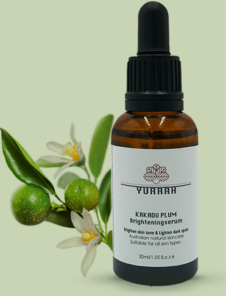 | 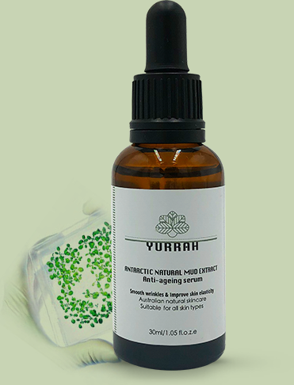 | 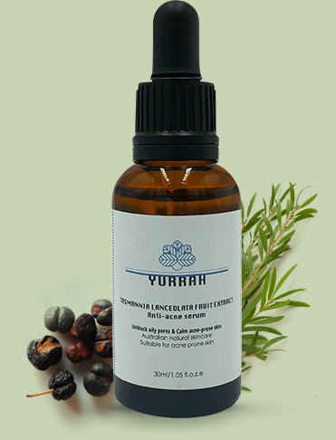 |
| 卡卡杜李美白原液 | 南极冰川天然泥抗衰原液 | 塔斯马尼亚杉果祛痘原液 |
| 卡卡李萃取物是经澳洲卫生署核准的安全美白成分。能够抑制酪氨酸酶作用，进而阻止麦拉宁黑色素的产生。可分解、减少黑色素沉积。 | 南极洲乔治王岛冰川天然泥中，分离提取出来的微生物。具有很强的刺激胶原蛋白和弹性蛋白再生的作用，具有很好的抗衰和改善皮肤弹性的效果。 | 塔斯马尼亚杉果能有效地舒缓和镇静受刺激的皮肤。能够有效的修复痘痘性肌肤，舒缓和镇静被刺激的肌肤。 |

专·业
Yurrah由澳大利亚久负盛名专注于天然护肤品配方和生产的研究所研发制作，由经验丰富的药剂师团队进行研发，专业的工程师和技术专家、药剂师组成。
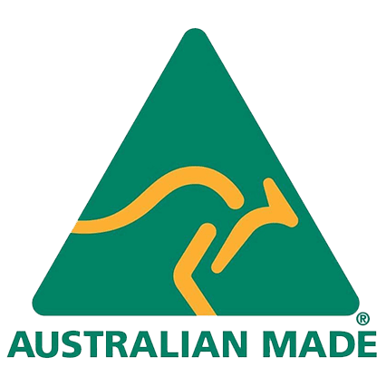
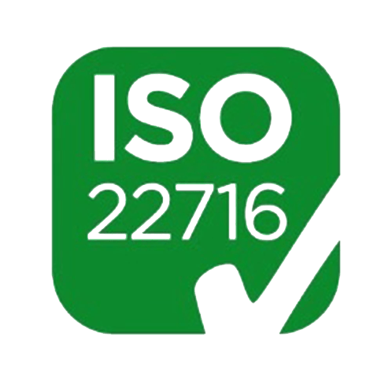
严·苛
澳大利亚是世界上公认的护肤品生产标准最严格、法规最完备、执行最严厉的国家之一，在国际上被誉为护肤品安全管理的典范。Yurrah完全符合澳大利亚质量认证标准，同时还通过了欧盟严格的质量认证。
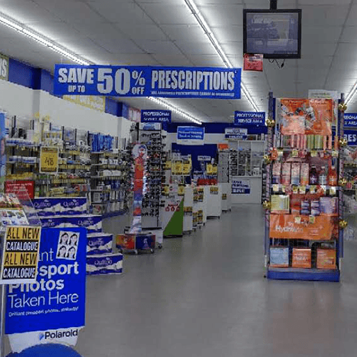
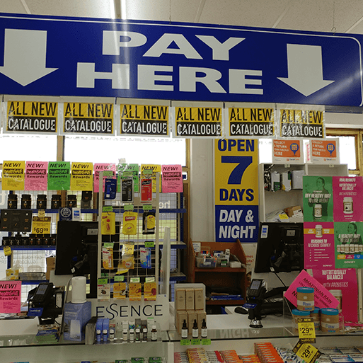
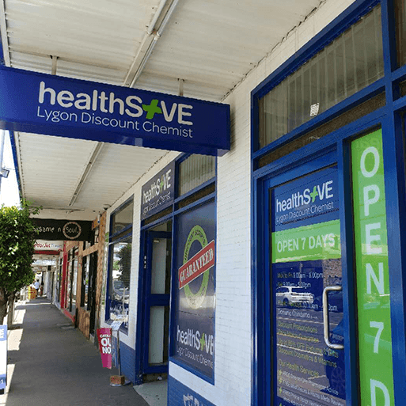
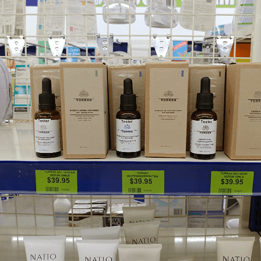
澳洲药妆店明星产品